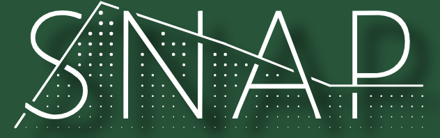
Home
About-us
Contact-us
Blog
Blog
Blog
Home
About us
Contact us
Blog
Data and Code Storage
As researchers we generate a range of data, this can be “output” files, excel spreadsheets, cvs files, large databases, code, PhD thesis, images and more. There is a greater…
Tricia
Dec 22, 2024
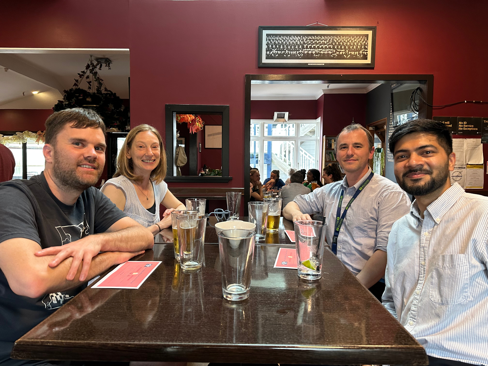
SNAP Christmas Drinks
On 4th December, SNAP committee members had their end-of-year Christmas drinks at the Kelburn Pub.
Tricia
Dec 4, 2024
SNAP end of year morning tea
On 3rd December, SNAP members held a festive morning of coding fun to round out the year.
Tricia
Dec 3, 2024
REAANZ Consultation
Tricia and Brendan provided information to Angela Davis of Collective Strategy who is working for REANNZ to help them understand researcher technology needs and barriers…
Tricia
Sep 4, 2024
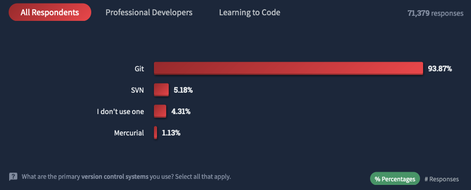
August Git and Pre-commit Workshop
On 21st August, James Quilty from the School of Engineering and Computer Science led a workshop on the best practices when using Git and an introduction to pre-commit tools.
Brendan
Aug 29, 2024
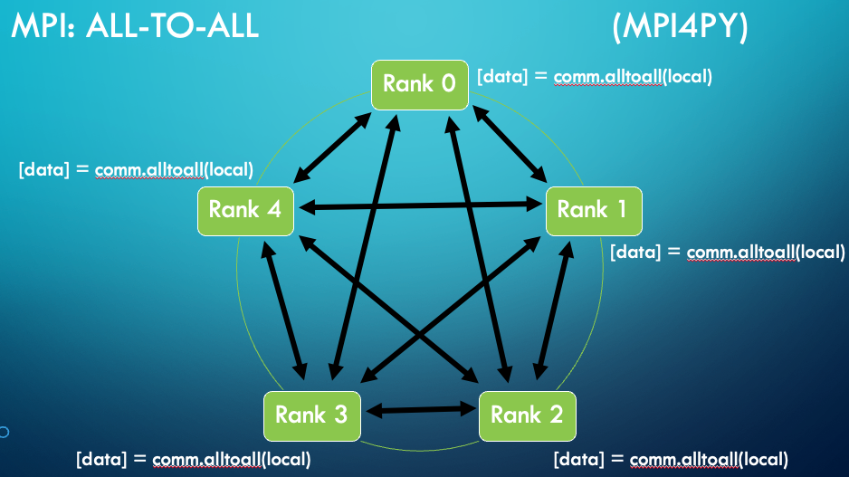
July Distributed Computing Workshop
On 24th July I led a workshop on distributed computing with a focus on what is MPI (the Message Passing Interface) and what is involved in assessing the scaling performance…
Brendan
Aug 29, 2024
Troubleshooting your code
Yvette from the School of Chemical and Physical Sciences led a workshop on debugging python code.
Tricia
May 24, 2024
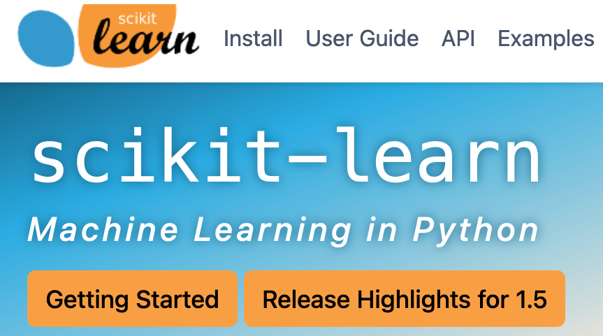
Intro to Scikit Workshop
Postgraduates and staff attended the workshop on 22nd April 2024 from 2 pm to 4 pm. The workshop focussed on an interactive learning environment, encouraging participants to…
Rohit and Tricia
Apr 22, 2024
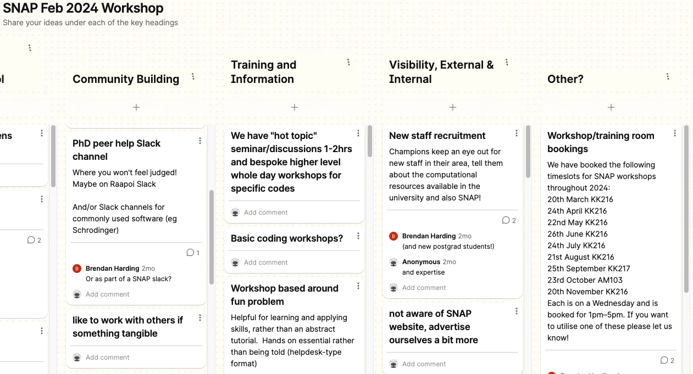
SNAP Planning Workshop
We held a planning workshop on the afternoon of 16 February 2024 with the aim of generating some ideas for activities SNAP could organise and participate in throughout 2024.…
Brendan Harding
Feb 16, 2024
Hear about our SNAP journey at eResearch NZ
We are a community-led initiative comprised of academics and e-resource support staff, from a wide range of disciplines and career stages who use and facilitate numerical…
Patricia Hunt
Feb 9, 2024
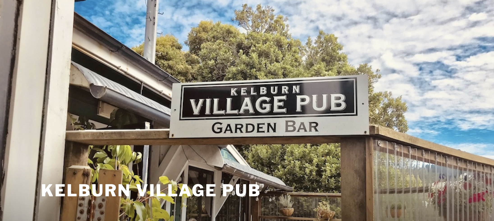
SNAP Christmas Drinks
We held our SNAP Christmas drinks on afternoon of 13 December, turn-out was small, but connections were strengthened. This event closed a very challenging 6 months for the…
Patricia Hunt
Dec 13, 2023
Visiting the Centre for eResearch at Auckland University
In December Prof. Hunt, the SNAP lead, was in Auckland for a conference and dropped into visit the much larger Centre for eResearch at Auckland University. She was welcomed…
Patricia Hunt
Nov 29, 2023
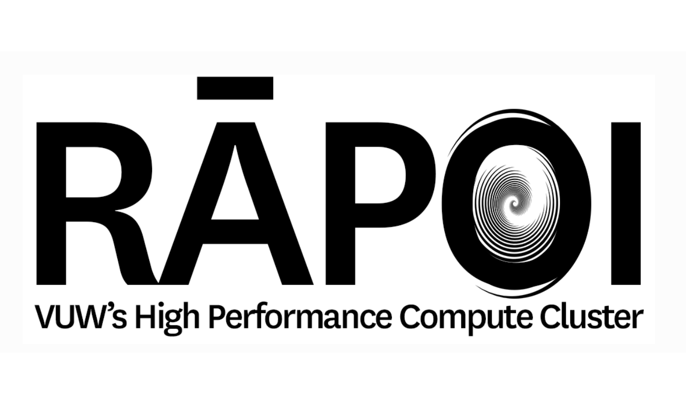
SNAP promotes the importance of the HPC support team
As part of the financial sustainability process the HPC team was proposed to be disestablished. The SNAP Champions Working Group defended the HPC team, and made a submission…
Patricia Hunt
Sep 5, 2023
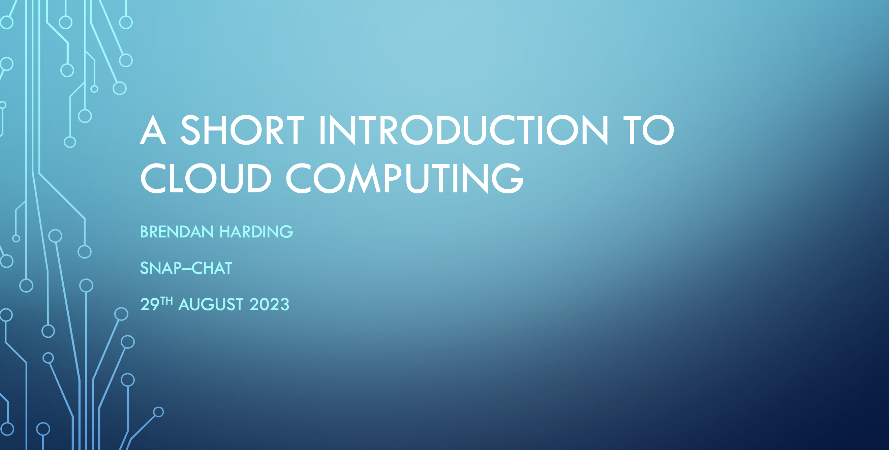
SNAP Chat cloud computing
“SNAP Chat”! An open invitation to SNAP members to a catered lunch-time seminar and chat. Brendan Harding gave an excellent talk on Cloud Computing with live examples. We…
Patricia Hunt
Aug 29, 2023
Andre Geldenhuis leaving VUW
It is with great sadness, and mild panic, we are saying good-bye to Andre Geldenhuis. Andre has engaged strongly with academics at all levels providing a friendly…
Patricia Hunt
Aug 25, 2023
Markus Luczak-Roesch stepping down from the SNAP working group
Markus Luczak-Roesch, from the School of Information Management and School of Business and Government has been one of our founding SNAP working group members. Due to the…
Patricia Hunt
May 25, 2023
SCPS ChatGPT workshop
The School of Chemical and Physical Sciences had a lunchtime workshop on how we are using ChatGPT and thoughts to consider into the future. It was a packed room showing the…
Yvette Perrott
May 24, 2023
May SNAP Newsletter!
The SNAP Newsletter tells you of SNAP activities and up-coming events, as well as other eActivies you may want to know about. The SNAP newsletter comes out at irregular…
Patricia Hunt
May 16, 2023
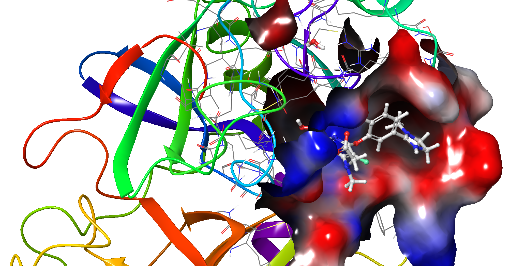
Molecular modelling
“Molecular modelling techniques such as ligand docking are widely used for the study of protein–ligand interactions and for drug discovery and development. Docking can be…
Wanting Jiao
Apr 19, 2023
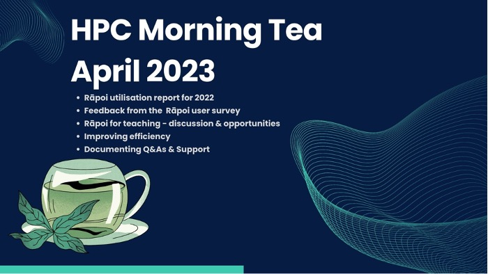
HPC Morning Tea
The HPC Morning Tea is the best way to ask your questions about the Rāpoi cluster or simply chat to the support staff from CAD’s Research Capability Team. A hot beverage, a…
Konstantina Vasileva
Apr 17, 2023
SNAP Coffee March
Come enjoy a coffee with others who use simulation, numerics, analytics and programming as part of their research. 10.15-11.00, Milk and Honey, Kelburn Campus
Patricia Hunt
Mar 15, 2023
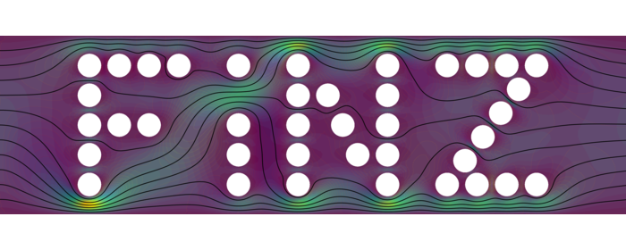
Fluids in New Zealand (FiNZ) Workshop 2023
The 2023 Fluids in New Zealand (FiNZ) workshop was held at Victoria University of Wellington (Kelburn Campus) 15–17 February 2023.
Brendan Harding
Feb 15, 2023
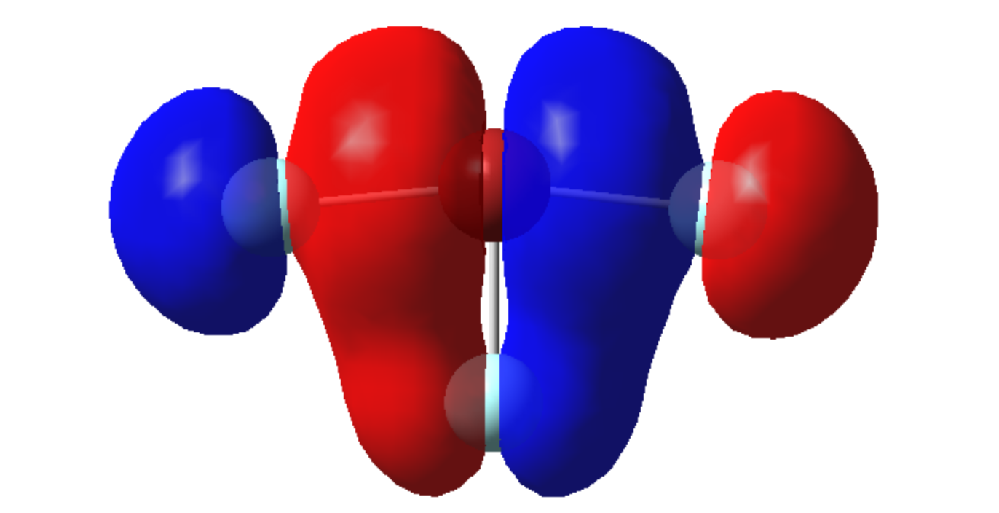
Beginners Introduction to Computational Chemistry
A workshop suitable for those who had never used computational chemistry before as well as those who were beginners and wanted to advance their skills. People could find out…
Patricia Hunt
Dec 6, 2022
SNAP Coffee November
On 4th Nov we had our 2nd coffee meeting, this is the first in person SNAP meeting since COVID restrictions were relaxed. We had a wonderful crowd arrive with 20 plus people…
Patricia Hunt
Nov 4, 2022
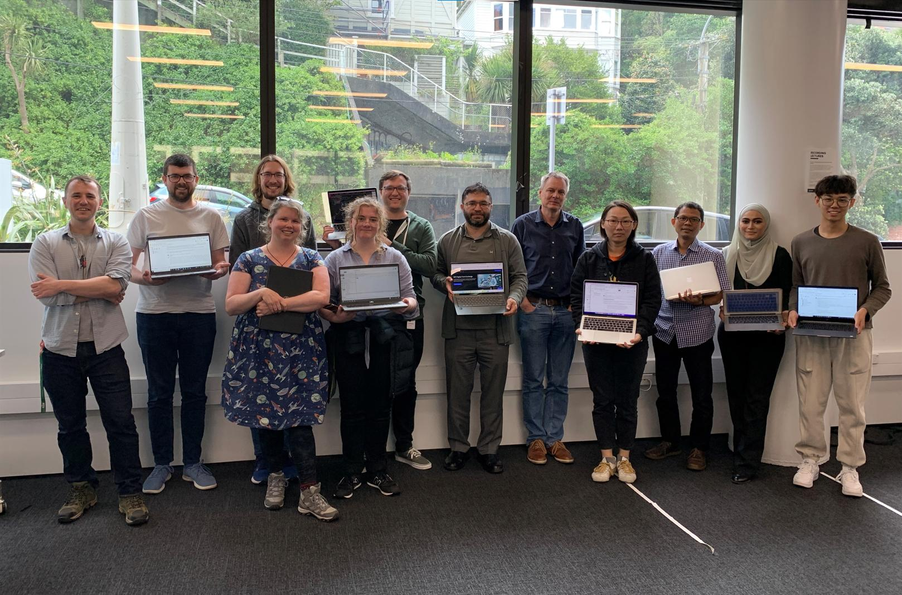
SNAP’s first training workshop
What do Lorde, Seinfeld and the Teenage Mutant Ninja Turtles have in common? Aside from being awesome, properties of all three can be represented as text, whether that be…
Stephen Skalicky and Matt Plummer
Oct 16, 2022
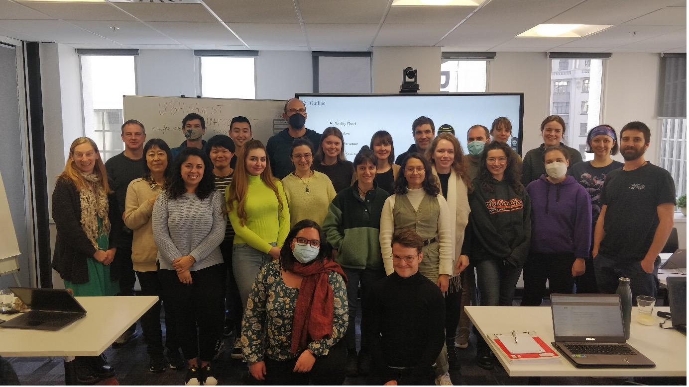
The Antarctic Science Platform Winter School
The Antarctic Science Platform Modelling Hub (located within the Antarctic Research Centre at VUW) held their second annual “Winter School” on 5-6 Sep 2022 in Wellington.
Liz Keller
Sep 6, 2022
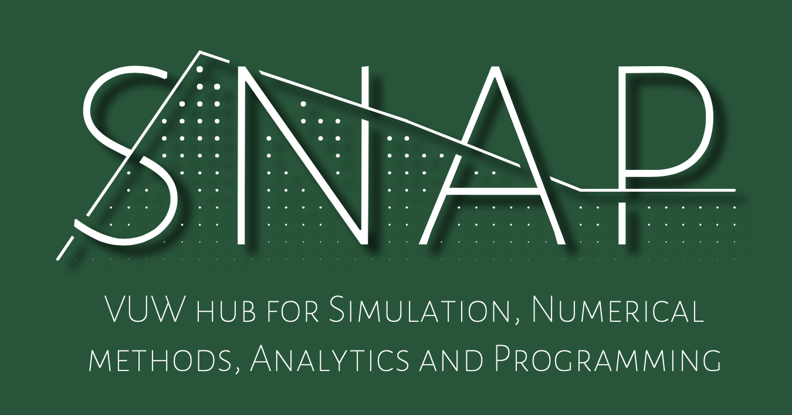
Brief summary of our March survey
Prior to our inaugural workshop, we asked the university community to let us know what type of software and modelling tools they use for research. We received 22 complete…
Brendan Harding
Jun 23, 2022
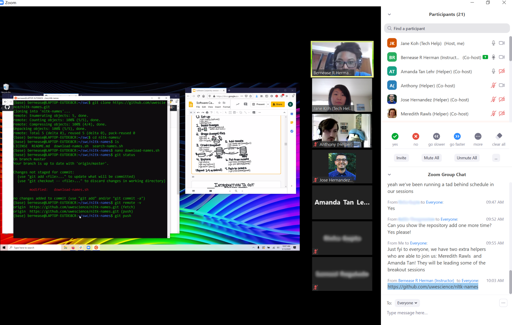
Online Software Carpentry workshop
Software Carpentry teaches introductory computational skills that enable the use of key infrastructure such as performance computing clusters, and that aid data management…
Matt Plummer
Apr 21, 2022
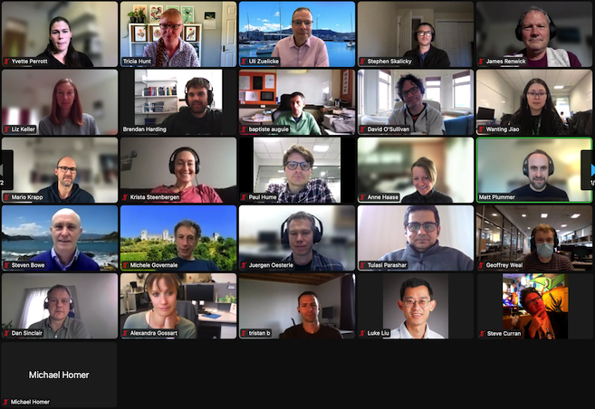
Refelctions on the First SNAP Event
The inaugural SNAP workshop was held on 13th April 2022 in an online format (via zoom). The main goal for the event was to provide an opportunity for the SNAP community to…
Brendan Harding
Apr 13, 2022
Digital Humanities Interview
“Even learning very basic programming, even if you’re not very good at it, I think it totally transforms the idea of what you’re doing with that computer, or what a computer…
Matt Plummer
Apr 13, 2022
No matching items
Back to top